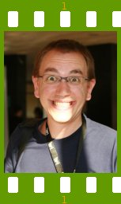

People of openSUSE: Vincent Untz

Continuing the last ‘People of openSUSE” interviews with people involved in the openSUSE Board Elections Committee, today we introduce you another member – Vincent Untz. Vincent is a Novell employee working 101% of his time for the openSUSE and GNOME projects, non-stop! ;-)
- Nickname: vuntz
- Homepage: http://www.vuntz.net/
- Blog: http://www.vuntz.net/journal/
- Favorite season: All of them, depending on my mood ;-) I might have a slight preference for spring and autumn, though.
- Motto: Les gens heureux ne sont pas presssés.
Please introduce yourself!
I’m a 28 years old french (28 since a few weeks only, and it’ll take time to get used to this — probably 11 months). I live in Grenoble in France and work remotely from there.
I started playing with free software during my studies, and I got involved in GNOME in 2002. But don’t ask me “why did you choose this project”, since I don’t really know why, except that I loved following the GNOME 2.0 development. I’m now heavily involved in various areas of the GNOME project — code, GNOME Foundation, release management, etc.
I’ve finished my studies last December, and I’m now working at Novell, on GNOME and on openSUSE.
Tell us about the background to your computer use.
I wouldn’t say I was always interested in computers that much, except for games. But 10-12 years ago, I got more curious to learn how computers and the OS work, and started tweaking stuff.
Then, I discovered that I could write applications and I’m still fascinated about how applications work: even though I know many technical details about how the software works, I still have this feeling that this is all some black magic. Especially when it’s a graphical application. I mean, seriously, if you think about it, how is it possible that writing some letters can produce something that works and that is interactive?
This is this fascination, and the intellectual challenge that you face when creating software (not just code, but in general), that got me hooked.
When and why did you start using openSUSE/SUSE Linux?
I started using openSUSE last February, when I joined Novell. I was using Ubuntu on my desktop before this switch, and I’ve also used Fedora for quite some time. Oh, and I’m also Debian-friendly :-)
I must admit I have no strong feelings for/against distributions: as long as I can use GNOME, I’m happy! Of course, this has changed a bit since I got involved in the openSUSE development — I tend to have stronger opinions for openSUSE now (about things I love or things I dislike), and I try to push things the way I’d like them to be.
When did you join the openSUSE community and what made you do that?
It didn’t make any sense to me to work on openSUSE without being part of the community: the openSUSE project wouldn’t work well without its community. So I joined the community when I started working on openSUSE; it was — and it’s still the case — important for me to do most (if not all) stuff within the community, and not as part of Novell.
And after a few months, I applied for openSUSE membership, and I’m now a happy openSUSE member!
In what way do you participate in the openSUSE project?
I do random things in the GNOME team. Packaging, fixing bugs, triaging bugs, some infrastructure work, etc. The thing I’m most proud of is the “osc gnome” plugin. I still need to push for the integration of some of the features in osc itself, but it’s a plugin which is really wonderful and helped us a lot in the GNOME team.
I happened to be part of the Election Committee, where I’m actually not doing anything (all the credit should go to Andrew, Claes and Marko). I’m just there to give my opinion since I’ve been involved for a long time in a similar committee for GNOME.
I’m also indirectly contributing to openSUSE by contributing to various upstream projects (mainly GNOME and some freedesktop.org things), but that’s another story, I guess.
What especially motivates you to participate in the openSUSE project?
Heh, I guess I could say that I want to be able to use my desktop ;-)There’s also the pride of seeing your work being used by other people. And of course, the community. The community is probably one of the most important factors: if you join #opensuse-gnome on Freenode, you’ll meet a bunch of friendly people, and that’s really what makes a difference.
What do you think was your most important contribution to the openSUSE project/community or what is the contribution that you’re most proud of?
Oh, I cheated and already replied. Oh, well, I guess I can do some shameless plug again: http://en.opensuse.org/GNOME/OscGnome. Try it. I’m in love with it. Let me give a few more details about this plugin. There are a few cool features:
- it lets you easily know when there’s a new upstream version for a package
- it automatically does most of the steps to update a package to a new upstream version
- it makes it easy to setup a branch for a package
- there’s a simple command to commit your changes, wait for the remote build to finish and, if the build was successful, to submit your changes
Right now, it only works with a few Build Service projects (GNOME:Factory, X11:common:Factory, X11:Compiz, I belive). It’s possible to add more projects if people want — the only reason there’s only a limited list of projects is that it depends on an external server which has to periodically check out packages from the build service.
Did I say I love it?
When do you usually spend time on the openSUSE project?
That’s part of my day job, so, err, nearly every day :-)
Three words to describe openSUSE? Or make up a proper slogan!
Green. Lizard. Rising.
What do you think is missing or underrated in the distribution or the project?
I think we need some better promotion, so we can reach more people and get more users. And this will indirectly lead to having more contributors. The good thing with more contributors is that we’ll be able to fix most of our issues :-)
What do you think the future holds for the openSUSE project?
I’ve never been good at predicting the future… So, err, joker :-)
A person asks you why he/she should choose openSUSE instead of other distribution/OS. What would be your arguments to convince him/her to pick up openSUSE?
I would make this person try it. There’s no one-fit-all solution, and it can happen that someone doesn’t feel comfortable with it.
Then, I’d talk about the freedom and the community, and reply to questions. In the end, I think that most people don’t care that much about the technical details, so I wouldn’t argue much about them.
Which members of the openSUSE community have you met in person?
It’d be hard to name everybody, but I think I mostly met some Novell employees: the GNOME and KDE teams, and also some SUSE people from Nürnberg and Prague. The best opportunity to meet a lot of people from the community is certainly FOSDEM, but this year, I was too busy with the GNOME stand and devroom…
How many icons are currently on your desktop?
23, way too many. Some are there since a very long time and I just got used to them, so I don’t remove them ;-)
What is the application you can’t live without? And why?
Hard question. I think it’s the ssh+screen+irssi+mutt combo. With that, I can feel at home from everywhere. I especially love mutt: I tried many mail clients (desktop apps, or webmails), but I always come back to mutt in the end. See also my preferred text editor below!
Which application or feature should be invented as soon as possible?
Either some mind-reading applications that would automatically write mails, blog posts, code, etc. or some technology that makes days last longer…
Which is your preferred text editor? And why?
Heh, it’s vim, of course: you know you are addicted to it when you start pressing Escape in other editors… I’m just used to it, with all the keybindings that sounded so insane at the beginning and that are so natural now.
Which famous person would you want to join the openSUSE community?
Don’t know. As much as having someone famous join the community would help boost the project, I think I prefer having non-famous people join. Like my friends or my family.
Which computer related skills would you like to have?
Not that I’m perfect with computers (far from it), but I’d prefer to have new non-computer related skills. Like being able to play music as if it were a second language for me.
The Internet crashes for a whole week — how would you feel, what would you do?
I guess I would start feeling bad the first day, because of many things I wouldn’t be able to do, and because I wouldn’t be able to communicate with many of my friends. And then, starting the second or third day, I’d probably take the opportunity to leave the computer and party with friends and have fun playing with them :-)
Which is your favorite movie scene?
I don’t really have one. I think I love the scene in Being John Malkovich where all the people have a John Malkovich face.
Star Trek or Star Wars?
Lord of the Rings? Okay, without cheating, that’d be Star Wars.
What is your favorite food and drink?
Drink: fruit juice. But a different one each time, if possible :-)
Food: hmm, don’t know. Let’s just say “Salade lyonnaise” or maybe poutine :-)
Favorite game or console (in your childhood and nowadays)?
I’m a big Nintendo fan. And the favorite game would be Super Mario 64: it was just amazing when it went out. And I still enjoy it: you know, making Mario jump everywhere, with so much freedom.
Which city would you like to visit?
Lhasa.
What is your preferred way to spend your vacation?
Doing nothing, in the (not so) wild life, with people I love.
Someone gives you $1.000.000 — what would you do with the money?
I’d ask people around me what I should do.
If traveling through time was possible — when would we be most likely to meet you?
I’ll try to go back to before the big bang, if there’s a before :-) If it turns out to be impossible, I’ll go in the other direction and try to see if there’s some end of time. Then I’ll go back to today.
There’s a thunderstorm outside — do you turn off your computer?
Nah. But I stop to watch the storm — that’s beautiful.
Have your ever missed an appointment because you forgot about it while sitting at your computer?
I don’t think it ever happened — or I’m still forgetting about it.
Show us a picture of something, you have always wanted to share!
I always like how people react when they see poutine for the first time:
{kind=link}
You couldn’t live without…
Air, water, food. Friends.
Which question was the hardest to answer?
This one.
What other question would you like to answer? And what would you answer?
In which language should the next interview occur? French!